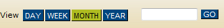

To change the timeframe for the Calendar view or the List view, for example, show only a day at a time, select the appropriate option (Day, Week, Month, or Year).
Icons for changing the starting date for the calendar display.

Use the Timeframe options in conjunction with a specific value in the blank field, and then click GO to further customize the starting date for the Calendar display.
Page tags: article:topic